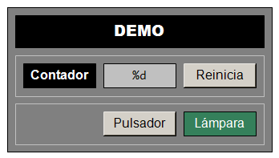

👋 Demo (TwinCAT 3)¶
📝 Descripción del Proyecto¶
El proyecto Demo pretende ser un Hola Mundo para autómatas programables (PLC).
Es un proyecto mínimo y funcional, que muestra la declaración y el uso básico de variables booleanas y enteras, ubicadas en los espacios de memoria de marcas, imagen de entrada e imagen de salida. Cubriendo los elementos esenciales de programación de los lenguajes de la norma IEC 61131-3 para la programación de PLC.

Este proyecto incluye además, una visualización elemental que permite interactuar con las variables del proyecto, con objetos gráficos. Formas rectangulares para mostrar el valor de variables booleanas y numéricas y botones para modificar el valor de variables booleanas y numéricas.
Código¶
Declaración
PROGRAM MAIN
VAR
ContadorCiclos : UINT; // Variable numérica en el espacio de marcas
i_Pulsador AT %I* : BOOL; // Variable booleana en la imagen de entrada
o_Lampara AT %Q* : BOOL; // Variable booleana en la imagen de salida
END_VAR
Código
// Uso de una variable numérica (se incrementa con cada ciclo de ejecución)
ContadorCiclos := ContadorCiclos + 1;
// Uso de variables de entrada y salida booleanas (copia la entrada en la salida)
o_Lampara := i_Pulsador;
Comentarios¶
- La variable
ContadorCiclosse incrementa indefinidamente una vez por ciclo básico de ejecución del PLC (10 ms). - La variable de salida
o_Lamparacopia, continuamente, el valor de la variable de entradai_Pulsador. - El valor de la variable
ContadorCiclosse muestra en la visualización. - La variable
ContadorCiclospuede reiniciarse si se acciona el pulsadorReinicia. - El valor de la variable
o_Lamparase muestra con el cambio de color del rectánguloLampara(verde claro =FALSE, verde oscuro =TRUE). - El valor de la variable
i_Pulsadorcambia cuando se acciona el botónPulsador.
💻 Requisitos del Sistema¶
Software¶
- IDE: Microsoft Visual Studio / TwinCAT 3 XAE (Versión mínima recomendada: 3.1.4024.x).
- Lenguajes: Texto Estructurado (ST).
🚀 Descarga¶
Para descargar, compilar y ejecutar este proyecto en el entorno de TwinCAT 3, seguir el siguiente procedimiento.
Mediante el Campus Virtual¶
-
Copiar a tu equipo local el fichero:
CV → Automatización → ejemplos → 1_tc3_demo → tc3_demo.tnzipque hay en la carpeta del campus virtual.
-
Seguir el procedimiento descrito aquí para generar la Solución a partir del fichero.
-
Compilar y poner en marcha el proyecto siguiendo lo descrito aquí.
🔨 Explicación¶
Para replicar la creación de la solución completa, seguir este procedimiento:
Sugerencia
Pulsa en ➡️ para obtener más información sobre cómo realizar el paso especificado.
- Crear una solución de TwinCAT3 con nombre
tc3_demo➡️ -
Crear un proyecto PLC con nombre
demo_PLC➡️Importante
En este ejemplo no utilizaremos bloques funcionales (FB) sino que implementaremos toda la funcionalidad directamente en el programa
MAIN. -
Declarar las variables en el programa
MAIN➡️PROGRAM MAIN VAR ContadorCiclos : UINT; // Variable numérica en el espacio de marcas i_Pulsador AT %I* : BOOL; // Variable booleana en la imagen de entrada o_Lampara AT %Q* : BOOL; // Variable booleana en la imagen de salida END_VAR -
Escribir el código
// Uso de una variable numérica (se incrementa con cada ciclo de ejecución) ContadorCiclos := ContadorCiclos + 1; // Uso de variables de entrada y salida booleanas (copia la entrada en la salida) o_Lampara := i_Pulsador; -
Diseñar la visualización añadiendo: ➡️
Sugerencia
Los colores especificados para los elementos son simplemente un ejemplo, pero pueden ser escogidos libremente.
-
Rectángulo (Rectangle) para la etiqueta Contador
Parámetros
- Texts > Text = Contador
-
Rectángulo (Rectangle) para el valor de
ContadorCiclosParámetros
- Color > Normal state > Frame color = [0, 0, 0]
- Color > Normal state > Fill color = [255, 255, 255]
- Texts > Text = [%d]
- Formato estilo printf que indica que se va a sustituir por un número entero.
- Text variables > Text variable = [
MAIN.ContadorCiclos]
-
Botón (Button) para reiniciar el contador
Parámetros
- Texts > Text = [Reinicia]
- Inputconfiguration
- OnMouseClick > Configure > Execute ST-Code = [
MAIN.ContadorCiclos := 0;]
- OnMouseClick > Configure > Execute ST-Code = [
-
Botón (Button) para el pulsador
Parámetros
- Texts > Text = [Pulsador]
- Inputconfiguration
- Tap > Variable = [
MAIN.i_Pulsador]
- Tap > Variable = [
-
Rectángulo (Rectangle) para la lámpara
Parámetros
- Colors > Normal state > Frame color = [0, 64, 0]
- Colors > Normal state > Fill color = [0, 64, 0]
- Colors > Alarm state > Frame color = [0, 128, 0]
- Colors > Alarm state > Fill color = [0, 128, 0]
- Texts > Text = [Lámpara]
- Color variables > Toggle color = [
MAIN.o_Lampara]
-
-
Poner en marcha el proyecto ➡️
- Utilizar la visualización creada PLC para facilitar la prueba:
- Reiniciar el contador desde la visualización pulsando en el botón Reinicia.
- Cambiar el valor de la lámpara de marcha pulsando el botón de marcha en la visualización.
- Alternativamente, escribe o fuerza las variables deseadas desde TwinCAT 3.
Ahora vamos a ejecutar el programa en un controlador remoto (por ejemplo, un PLC del laboratorio).
-
Buscar el controlador en la red, escanear los módulos y probar dos terminales/canales, uno de entrada y otro de salida. ➡️
Sugerencia
Abrir la hoja de cálculo con la lista de entradas y salidas del sistema FMS200, seleccionar la pestaña correspondiente a tu estación y escoger un pulsador de entre los elementos de entrada y una lámpara de entre los elementos de salida.
-
Vincular los terminales/canales correspondiente con las variables de E/S ➡️
- Variable de entrada
i_Pulsador - Variable de salida
i_Lampara
- Variable de entrada
-
Activar la configuración y reiniciar TwinCAT 3 en modo Ejecución (Run Mode) ➡️
- Cargar el código en el controlador (Login) ➡️
- Poner el código en ejecución (Start) ➡️
- Comprobar que, accionando el pulsador físico, se enciende la lámpara física.
- Utilizar la visualización integrada en el proyecto PLC para facilitar la prueba:
- Comprobar en la visualización que, accionando el pulsador físico, cambia de estado la lámpara.
-
Comprobar en la visualización que, accionando el botón de la visualización, ni se enciende, ni cambia de estado la lámpara.
Importante
Esto se debe a que la ejecución del ciclo básico hace que el valor del pulsador se actualice con el valor del pulsador físico al inicio de cada ciclo, sobreescribiendo el valor que fija el botón de la visualización.
🤝 Contribuciones¶
Este proyecto es utilizado con fines educativos y de prueba. Las contribuciones, sugerencias o correcciones de errores son bienvenidas. Por favor, abra un Issue o envíe un Pull Request si deseas contribuir.
🧑 Autor¶
- Autor Principal: Victor Torres (@vetorres-uma)
- Revisor: Manuel Castellano (@mcastellanoquero)
- Revisor: Francisco Ángel Moreno (@famoreno)
⚖️ Licencia¶
Este proyecto es de código abierto y está disponible bajo la Licencia Pública General GNU (GPL).
- Consulte el archivo
LICENSE.mdpara más detalles.